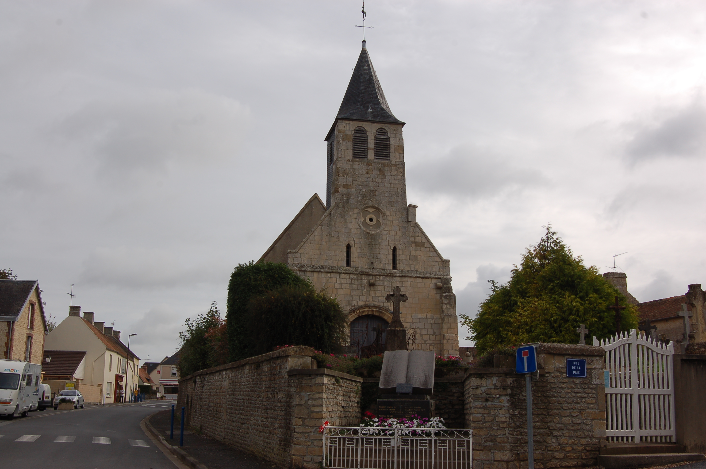
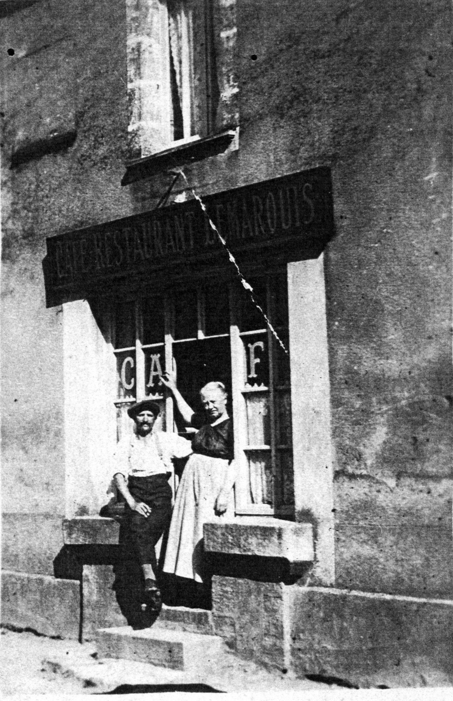

Petites Histoires
Des récits personnels qui tissent l'histoire de notre commune
(Durée : 46s)
Nos Histoires
Découvrez les récits qui ont marqué notre village

La couronne de coquelicots
Un vétéran britannique retrouve son refuge de guerre...

Anecdotes dans la rue de Cabourg
Un ancien bordel, le manège et la vie des habitants...

Chez Marguerite
un bar dont la gérante a marqué les esprits !

Amours
La rencontre et le développement de belles relations...

Plaisanteries
Le maire élu sans se présenter !
Prochainement
Histoire à venir
Nouvelle histoire en préparation...
Carte des Histoires
Découvrez où se sont déroulées nos histoires dans le village